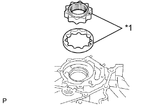

МАСЛЯНЫЙ НАСОС > ПОВТОРНАЯ СБОРКА |
| 1. INSTALL OIL PUMP DRIVE GEAR |
Place the timing belt case on wooden blocks.
|  |
Insert the drive and driven gears into the timing belt case with the marks facing the oil pump cover side.
| *1 | Mark |
| 2. INSTALL OIL PUMP COVER |
Apply adhesive to 2 or 3 threads of the screws.
Install the oil pump cover with the 8 screws.
| 3. INSTALL OIL PUMP RELIEF VALVE |
Insert the relief valve and spring into the installation hole of the timing belt case.
Using a 12 mm hexagon wrench, install a new gasket and the plug.